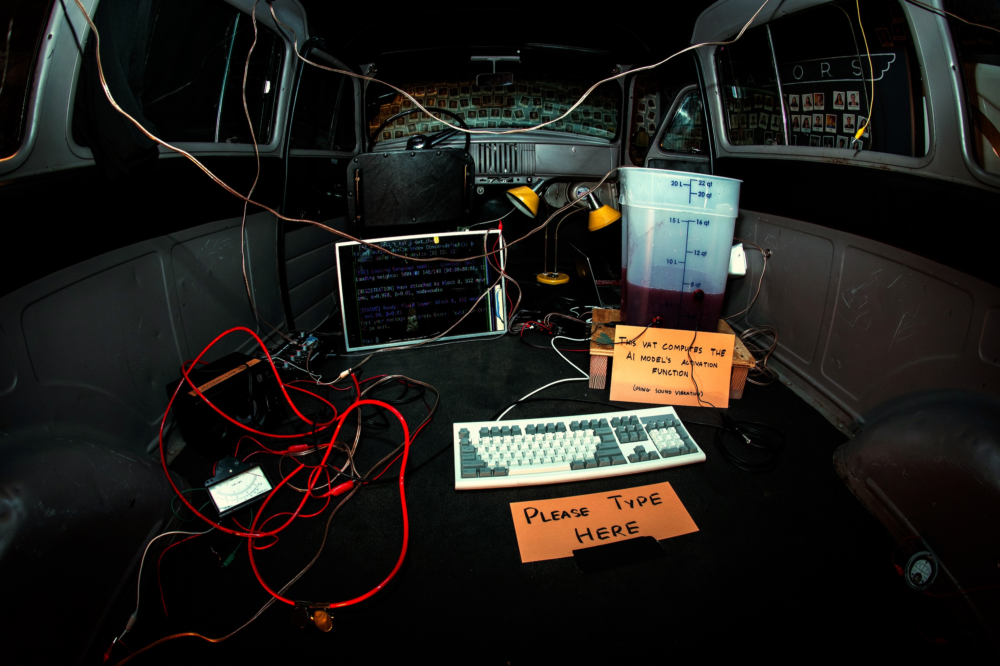

2026
This machine runs a rudimentary AI chatbot, with one part of the model replaced by a 20 liter vat of human blood simulant. Instead of a computer chip calculating each word, a frankenstein assemblage of transducers and homemade electronics use sound to exploit the non-Newtonian properties of blood to perform computation.
Human blood is a non-Newtonian fluid: its properties change depending on the forces acting on it. Sound waves introduced at one side of the vat have specific mathematical relationships to the resulting vibrations at the other end. By encoding information into these sounds, the blood itself is used to calculate.
When AI systems appear clean, immaterial, and disembodied, it is only because the bodies, violence, and exploitation of human life that sustain them remain hidden from view. Here we watch your words enter and exit the substance of life.
EXHIBITIONS
HASSO PLATTNER INSTITUTE OF DESIGN, STANFORD UNIVERSITY